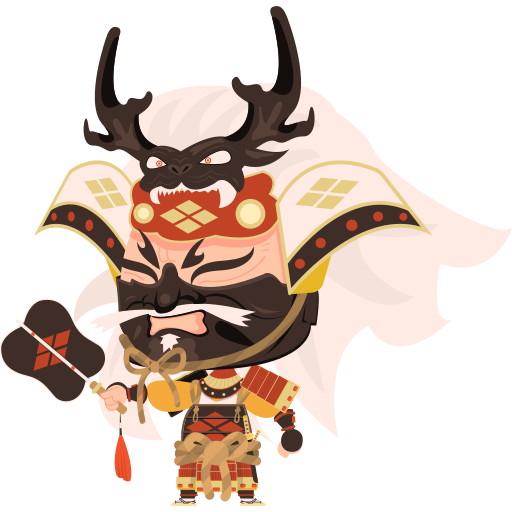
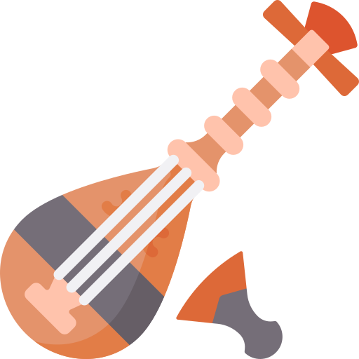
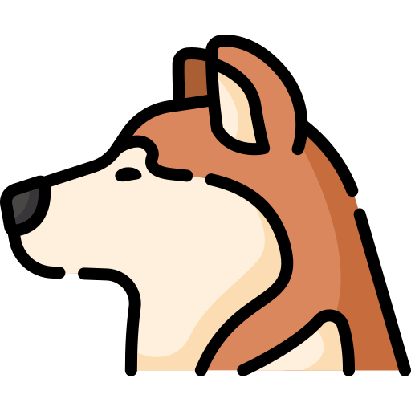
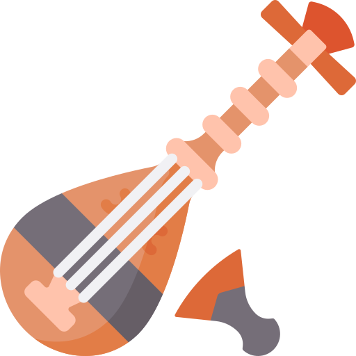
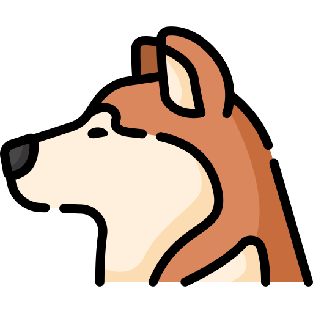
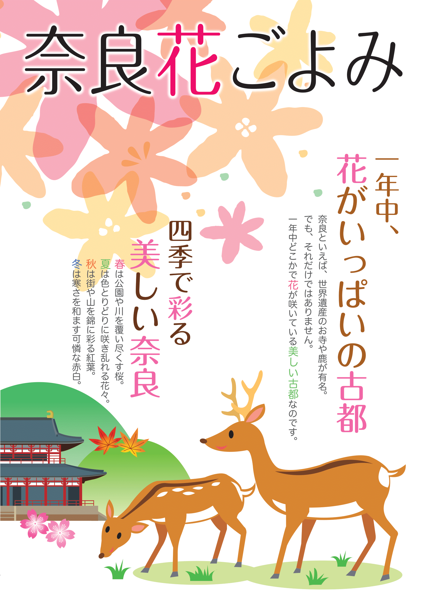

旅行
 

Experience-Japan
Places
Nara
Nara
Nara 【奈良】 was the national capital of Japan from 710 to 784—when it was called Heijō-kyō—and retains the atmosphere of ancient Japan. The city is most noted for the many ancient Japanese Buddhist buildings, artifacts, pilgrimage routes, world heritage sites and deers.
Vocabularies:

Visit the official website of Nara for more
information.
Kobe
Kobe
Aizu
Aizu.Wakamatsu
Aizu.Wakamatsu 【会津若松】 is a castle town in the interior of Fukushima Prefecture which is known for its award-winning sake and its samurai tradition.
Vocabularies: